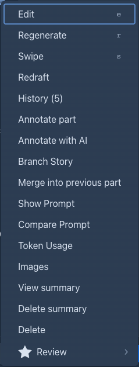
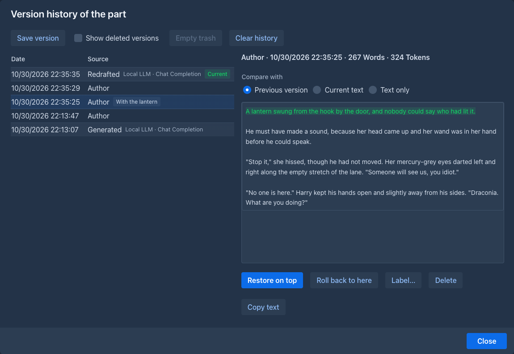
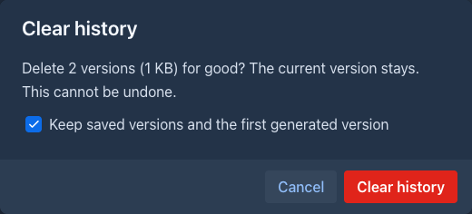
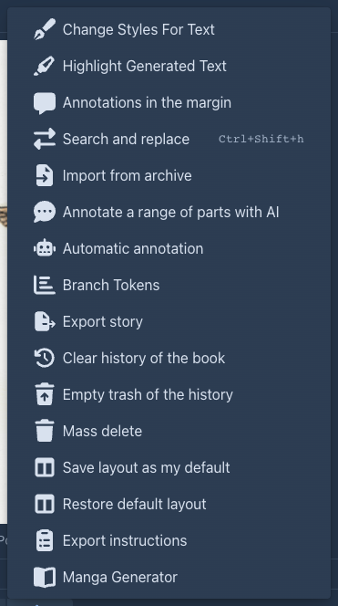
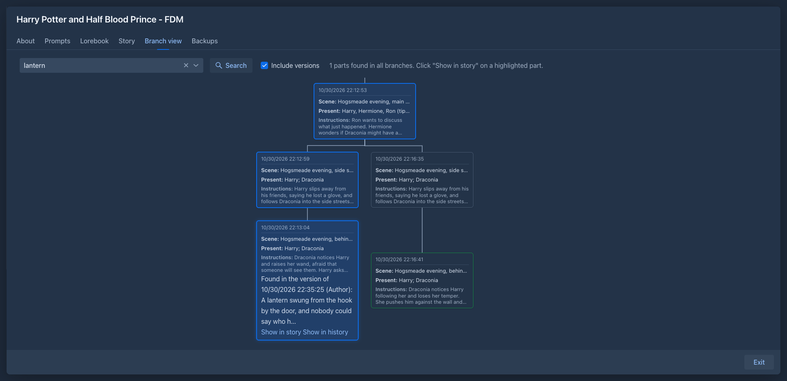

Version history of a part
Every time the text of a part changes, Marginalia keeps the text it had. You can look at the earlier versions of a part, see what changed between them, put one back, give a version a name so it is never lost, and search the old text.
A part is changed by the model writing it (the first generation, Regenerate, Swipe, Redraft), by you (Edit and Save), by a mass action (Search and replace, an import, a command), by an agent, by an extension, by merging two parts, and by putting a version back. Each of these makes a version with the time and who made it:
The history is not a second copy of the book. The versions are stored apart from the parts, so a long history does not make the story slower, and a book that is exported, published or read in the viewer has only the current text.
Looking at the history
Choose History in the menu (☰) of the part. The number in brackets is how many versions the part has. (The item is not offered while the text of the part is edited, nor for a part that is not saved yet.)


The list on the left has the newest version at the top. Each row has the time, the source, the number of words and the name of the version, if it has one; the newest version is marked Current: it is the text the part has now. Click a row to see that version on the right. Above the text, choose what it is compared with:
A version that a model wrote shows its reasoning in a block you can unfold. A Restored version says which version it is a copy of.
On a phone the dialog fills the screen: the versions are cards above the selected version, and nothing needs the mouse.
Putting a version back
There are two ways, and they differ in what happens to the versions that come after:
Both change the part as an edit does: the summaries that describe the old text become outdated, and Marginalia tells how many, and the part counts as edited. The story shows the restored text at once.
Naming a version
A version with a name is a saved version, and the history never removes it by itself.
- Save version in the dialog saves the text the part has now with a name you give.
- Label… gives a name to a version that exists, or changes or removes it.
Use it before you try something risky: the draft the editor liked, before the duel was cut.
Deleting versions
-
Delete puts a version into the trash of the history. Tick Show deleted versions to see the trash (the rows are greyed); Take out of trash puts a version back where it was in the list, and Delete permanently removes one for good. The newest version cannot be deleted: it is the text of the part.
-
Empty trash deletes everything in the trash for good.
-
Clear history deletes all versions of the part but the current one, for good. The dialog says how many versions go and how much room they take. Keep saved versions and the first generated version (checked at first) keeps the ones you named and the first thing the model wrote for the part.

The settings menu (⚙) of the story has the same for the whole book: Clear history of the book and Empty trash of the history.

How many versions are kept
A part keeps 50 versions unless a limit says otherwise. When a new version would be one too many, the history removes the oldest version in the trash first, and then the oldest version that is not in the trash. Versions in the trash count toward the limit until they are purged. Three versions are never removed: the newest one, the ones with a name, and the first thing the model generated for the part (they do not count toward the limit either).
The limit can be set on four levels, and the strictest one wins:
An empty field means that this level sets no limit. 0 keeps no history at all (the versions that exist stay until you clear them, but nothing new is added). The field shows, as its hint, the limit it inherits and which level sets it, for example Limited to 20 by the folder "Fan fiction". A book cannot raise a limit set above it.
Searching the old text
The main searches look at the current text only, so an old sentence you changed does not make a part show up. To find it, tick Include versions (off at first, and not remembered, so a search never surprises you with old text):
-
in the advanced search of the books: a book is found when an earlier version of one of its parts has the words;
-
in the search of the branch view: a part that has the words only in an earlier version is marked, the hit says Found in the version of 12 Oct 2026 14:05 (Generated), and Show in history opens the history of the part on that version.

An agent can do the same with the search-parts command and its includeVersions option; each hit then says which version
it is from. Versions in the trash are not searched, and Search and replace never changes a version.
Backups, copies and the Trash
-
A book backup can take the history with it (Include version history, unchecked at first, because it can be large). Restoring such a backup, as the book or as a copy, brings the versions back, with their names and the trash. A backup without it gives each part one first version.
-
A duplicate of a book starts its own history: one version per part, from the text it was copied with.
-
Deleting a part, or a book, takes its versions with them; they are in the Trash as long as the part is, and are deleted for good with it.
-
Merging a part into the previous one removes the history of the part that is merged; the text shows up in the history of the surviving part as a Merged version.
Books from before the history
When Marginalia was updated, every part that already existed got its first versions: a part a model wrote starts with a Generated version of the text as the model wrote it (with its reasoning and the model used), and has an Author version when you edited it since; any other part starts with an Author version. The earlier edits of those parts are not known and are not in the list.